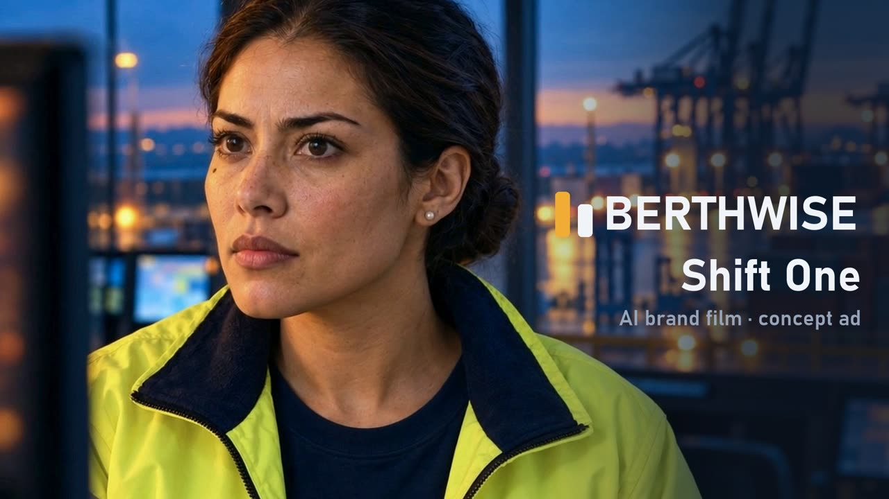

WatchB2B software ad · port operations · concept
BERTHWISE: “Shift One”
The same operations manager across five shots, from the quay to the control room. The tablet app screen is our own design, tracked onto the device in post, with her hand kept in front.
Angle: open on the delay, not the logo. The product appears only as the one tap that fixes it.
16:9 and recomposed 9:16 · English voice-over · 15 s